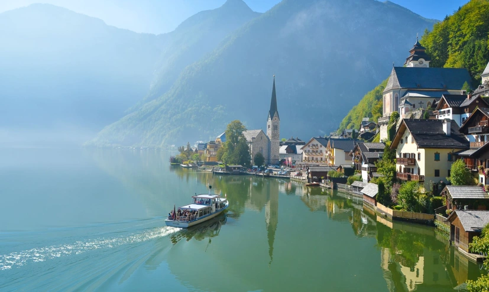
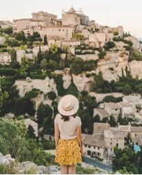
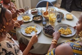
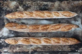
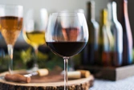

LAKESIDE DAYDREAM
호숫가에서 보내는 느린 하루
할슈타트 · 잘츠부르크 / 산책과 커피, 그리고 쉼
THE EUROPEAN SLOW TRAVEL CLUB
호숫가의 아침, 작은 골목의 빵 냄새.
좋아하는 순간들로 채우는, 나만의 유럽 여행.
Less hurry, more wonder.
서두르지 않아도 충분히 아름다우니까.


somewhere in Provence…PICK YOUR LITTLE ESCAPE
어디를 가느냐보다, 어떻게 머무르느냐.
당신의 속도에 맞는 여행을 골라보세요.
할슈타트 · 잘츠부르크 / 산책과 커피, 그리고 쉼
프로방스 / 골목마다 만나는 나만의 영화

A TABLE FOR FRIENDS로컬 마켓 · 작은 비스트로 / 함께라서 좋은 식탁
아직 저장한 여행이 없어요. 마음에 드는 여행의 ♡를 눌러보세요.
여행 컬렉션은 영감을 위한 예시 일정입니다. 실제 판매·예약 상품이 아닙니다.
IT'S THE LITTLE THINGS
갓 구운 빵 한 조각, 해 질 무렵의 와인 한 잔.
여행의 가장 좋은 장면은 계획 밖에 있을지도 몰라요.


NOTES FROM THE JOURNEY
도착한 날에는 일정을 비워두세요. 숙소 주변을 한 바퀴 걷고, 내일 아침에 갈 카페 하나를 찾아두면 충분해요. 늦은 시간 이동보다 여유 있는 도착 시간을 선택하고, 숙소 주소와 비상 연락처는 오프라인으로 보관하세요.
편한 운동화, 가벼운 겉옷, 작은 노트. 그리고 휴대전화가 없어도 돌아갈 수 있는 숙소 주소. 짐을 줄이면 골목을 걷는 발걸음도 가벼워져요.
3박 4일은 한 도시와 근교 한 곳을, 4박 5일은 한 지역에 머물며 여유 있는 하루를 더해보세요. 표시된 일정은 현지 체류를 기준으로 한 예시이며, 한국 출발 항공 이동 시간은 별도로 고려해야 해요.
YOUR NEXT CHAPTER
설레는 마음 하나면 여행의 시작으로 충분해요.
마음에 드는 여행 담기 ↗